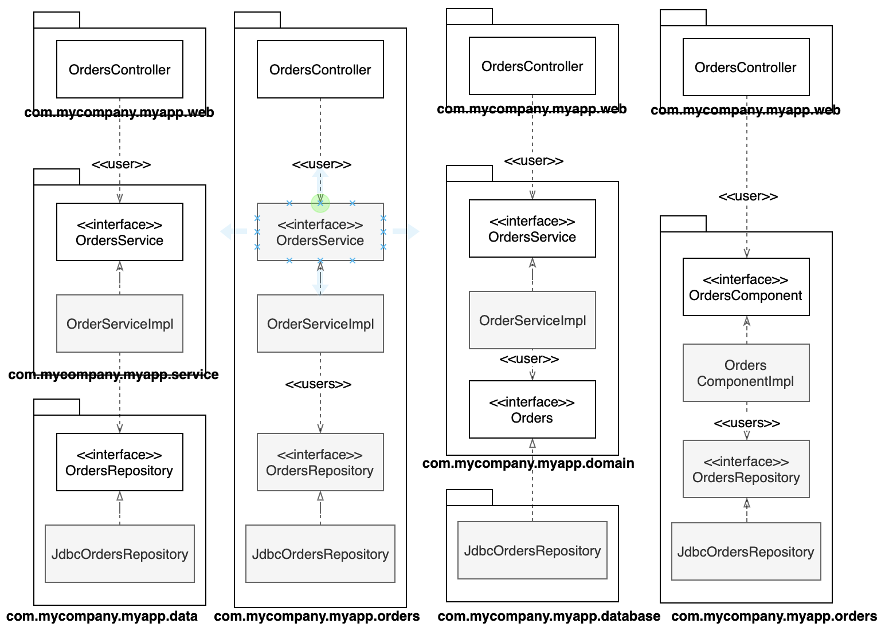

“CleanArchitecture 34장”
사례 설정
- 온라인 서점
- 고객이 주문 상태를 조회할 수 있는 유스케이스 구현
계층 기반 패키지
수평 계층형 아키텍처
기술적인 관점에서 해당 코드가 하는 일에 기반해 코드를 분할한다.
계층 기반 패키지
- 계층 이라는 얇은 수평 조각으로 나뉨
- 각 계층은 유사한 종류의 것을 묶음
- 엄격한 계층형 아키텍처의 경우 반드시 바로 아래 계층에만 의존
- 자바의 경우 계층은 패키지로 구현
- 계층 사이의 의존성은 모두 아래를 향함
- 프레젠테이션 도메인 데이터 계층화에서 처음 시작하기에 적합
- 다만 소프트웨어가 복잡해지고 커지면 더 세분화된 모듈화를 고민해야 함
- 업무 도메인에 대해 말해주지 않음
- 전혀 다른 업무 도메인이 웹, 서비스, 리포지터리로 모두 비슷하게 구성
기능 기반 패키지
서로 연관된 기능, 도메인 개념 또는 Aggregate Root에 기반하여 수직의 얇은 조각으로 코드를 나누는 방식이다.
- 모든 타입이 하나의 자바 패키지에 속함
- 코드의 상위 수준 구조가 업무 도메인에 대해 알려줌
- 주문 조회하기 유스케이스를 변경할 때 변경해야 할 코드가 모두 한 패키지에 담김
aggregate root
- 데이터 변경의 단위로 다루는 연관 객체의 묶음
- 모든 Aggregate는 Root를 가짐
- 외부에서 객체를 접근 시 반드시 Aggregate root를 통해야함
aggregate 더 알아보기 > https://medium.com/@SlackBeck/%EC%95%A0%EA%B7%B8%EB%A6%AC%EA%B2%8C%EC%9E%87-%ED%95%98%EB…
포트와 어댑터

포트와 어댑터, 육각형 아키택처 등의 방식으로 접근하는 이유 -> 업무 / 도메인에 초점을 둔 코드가 프레임워크나 데이터베이스 같은 기술적 세부 구현과 독립적이며 분리된 아키텍처를 만들기 위함
포트와 어댑터 더 알아보기 > http://getoutsidedoor.com/2018/09/03/ports-adapters-architecture/
요약하자면, 코드는 내부(도메인)와 외부(인프라)로 구성된다.
- 내부 : 도메인 개념
- 외부 : ex) 데이터베이스, UI 등과의 상호작용 포함
외부가 내부에 의존하며, 절대로 그 반대로는 안된다.

- com.mycompany.myapp.domain : 내부
- 나머지 패키지 : 외부
- 의존성 : 외부 -> 내부
- 유비쿼터스 도메인 언어
컴포넌트 기반 패키지
완화된 계층형 아키텍처
계층과 인접한 계층들을 건너뛰는 일이 허용
의존성 화살표는 아래를 향함
OrdersController가 OdersService 우회
경우에 따라서는 의도된 상황 > CQRS 패턴 : Command Query Responsibility Segregation
데이터를 변경하고 조회하는 패턴을 서로 분리
커맨드 ( Create - Insert, Update, Delete : 데이터를 변경) 와 쿼리 ( Select - Read : 데이터를 조회)의 책임을 분리
CQRS 패턴 더 알아보기 > https://www.popit.kr/cqrs-eventsourcing/
예방책
- 아키택처 원칙이 필요
- 예를 들어 “웹 컨트롤러는 절대로 리포지터리에 접근해서는 안된다”
- 정적 분석 도구(NDepend, Structure101, Checkstyle)
- 컴파일러를 사용해 아키텍처를 강제하는 방법을 추천
위와 같은 이유로 컴포넌트 기반 패키지를 도입해야 한다.
- 큰 단위의 단일 컴포넌트와 관련된 모든 책임을 하나의 자바 패키지로 묶는데 중점
- 서비스 중심적인 시각으로 소프트웨어 시스템을 바라봄
- 사용자 인터페이스를 큰 단위의 컴포넌트로부터 분리해서 유지
- 업무 로직과 영속성 관련 코드를 하나로 묶음 > 컴포넌트
컴포넌트는 멋지고 깔끔한 인터페이스로 감싸진 연관된 기능들의 묶음으로, 애플리케이션과 같은 실행 환경 내부에 존재한다.
C4 소프트웨어 아키텍처 모델
- 시스템의 정적 구조를 컨테이너, 컴포넌트, 클래스(혹은 코드)의 측면에서 계층적으로 생각
- 시스템은 하나 이상의 컨테이너(웹 애플리케이션, 모바일 앱, 데이터베이스 등)으로 구성
- 각 컨테이너는 하나 이상의 컴포넌트를 포함
- 각 컴포넌트는 하나 이상의 클래스(혹은 코드)로 구현
- 주문과 관련된 코딩 시 OrdersComponentaks , 즉 한곳만 보면 됨
구현 세부사항엔 항상 문제가 있다.
public 접근 지시자
모든 타입에서 public 지시자를 사용한다는 건 사용하는 프로그래밍 언어가 제공하는 캡슐화 관련 이점을 활용하지 않겠다는 뜻이다.
조직화 vs 캡슐화
네 개의 아키텍처 접근법이 모두 동일하다. 이처럼 모든 타입을 public 으로 선언한다면, 우리가 실제로 갖게 되는 것은 수평적 계층형 아키텍처를 표현하는 네가지 방식일 뿐이다.

- 계층 기반 패키지 접근법
- 기능 기반 패키지 접근법
- 포트와 어댑터
- 컴포넌트 기반 패키지 접근법
다른 결합 분리 모드
자바의 OSGi 모듈 프레임워크
Open Service Gateway initiative
한 개의 번들 또는 여러 개의 번들로 이루어진 애플리케이션 자체를 언제든지 동적으로 프레임워크상에 설치, 실행, 업데이트, 중단, 제거하는 것을 가능하게 하는 매우 유연한 라이프 사이클 모델을 지원하는 프레임워크
ex) Eclipse, IntelliJIDEA
자바9 에서 제공하는 새로운 모듈 시스템
모듈 시스템을 제대로 사용하면, public 타입과 외부에 공표할 타입을 분리 할 수 있다.
ex) Orders 모듈 생성 시 모든 타입을 public 으로 지정하더라도 그 중 일부 타입만을 외부에서 사용할 수있도록 공표
소스 코드 수준에서의 의존성 분리
업무 도메인 용 소스코드 : OrderService, OrderServiceImpl, Orders
웹용 소스코드 : OrderController
데이터 영속성용 소스 코드 : JdbcOrdersRepository
포트와 어댑터 접근법 적용
도메인 코드(내부)
인프라 코드(외부)
- 절충이 필요 : 포트와 어댑터에 대한 페리페리크 안티 패턴
- 웹 컨트롤러 같은 인프라 코드가 애플리케이션의 다른 영역 데이터베이스 등이 있는 코드를 직접 호출 할 수 있음
- 도메인을 통하지 않음
결론
최적의 설계를 했더라도 구현 전략에 얽힌 복잡함을 고려하자. 가능하다면 선택사항을 열어두되, 실용적으로 행동해야 한다. 또한 선택된 아키텍처 스타일을 강제하는데 컴파일러의 도움을 받을수 있을지 고민하며, 데이터 모델과 같은 다른 영역에 결합되지 않도록 주의하자.
구현의 세부사항에는 항상 문제가 있는 법이다.